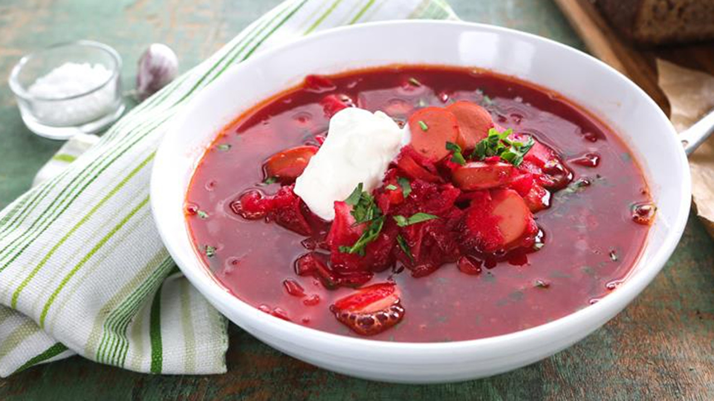

Ukrainian Red Borscht Soup

This scrumptious dish will make you wish you were Ukrainian.
Full recipe here
Ingredients
- Pork Sausage
- Onion
- Beets
- Carrots
- Potatoes
- Cabbage
- Canned Tomatoes
- Vegetable Oil
- Water
- Garlic
- Sugar
- Salt and Pepper
- Sour Cream
- Parsley
Steps
- Cook the sausage and set aside.
- Boil water, add the sausage, then add the vegetables and diced tomatoes.
- Cook the onion, stir in the tomato paste, and thin with water. Transfer to the pot.
- Add the garlic, cover, and turn off the heat. Stir in the sugar and seasonings.
- Ladle into bowls and garnish with sour cream and fresh herbs.
Enjoy!